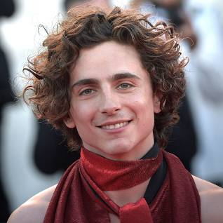
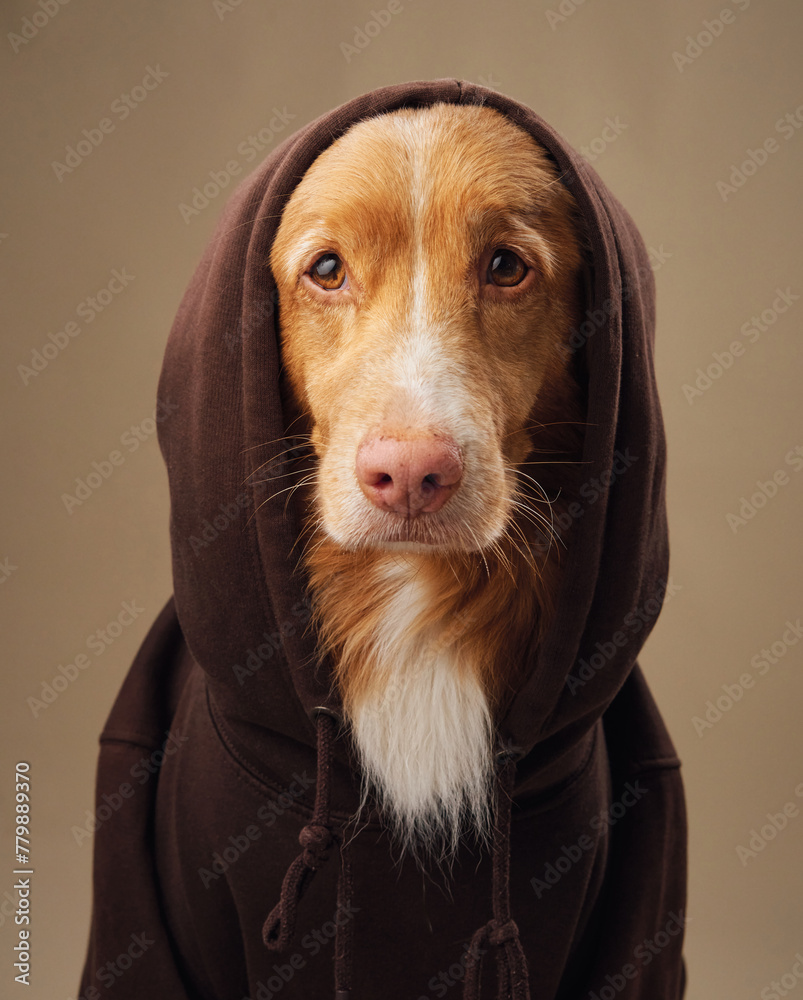

xs
sm
md
lg
xl
2xl
3xl




We accept Gyros
Our Smaller. Smarter. approach isn't just a tagline; it’s a commitment to fostering genuine connections. It’s a professor's guidance that illuminates a student's true calling, a coach’s encouragement after a tough game, a student life staff member’s support that eases the transition to university life — these moments are the building blocks of dreams. They empower our students to become more than just graduates; they become the movers and shakers of tomorrow.
Give Today